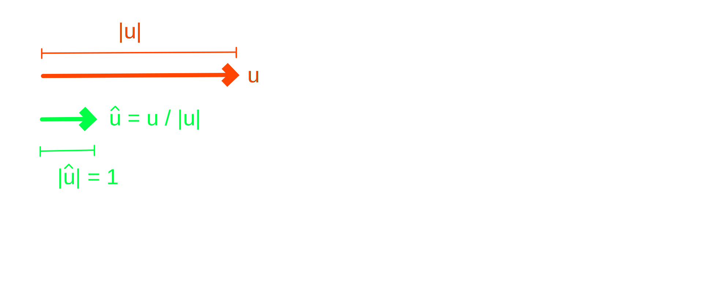

Vector Normalization
The objective of normalizing or unitizing vectors is to retain the same direction but adjust their magnitude to unit length. It is performed by dividing vectors, in the scaling sense, by their length. Therefore, for a vector u with length |u|, its normalized direction is v = u / |u|. Computing the length of |v| shows that |u / |u|| equals |u| / |u| or just 1.0. Unit-length vectors are sometimes denoted with a caret/hat ^ symbol over the letter such as û. However, since it is difficult to use these symbols in code they will be avoided.

Dimensional Analysis
The components of a vector are expressed in linear units of length, such as meters. The process of dividing each with another length, which is also in the same units, in some sense cancels the units out. Therefore, unit vectors can be considered as pure or unit-less directions.
Unsafe Computation
The code below creates a unit-length vector v, without modifying the original vector u. Note that if the vector has zero length, then we have a division by zero problem. So while the approach presented below makes mathematical sense, it is not appropriate for computing.
""" Normalize Vector Fast
"""
def Normalize( u ):
length = math.sqrt(
u.X ** 2 +
u.Y ** 2 +
u.Z ** 2 )
""" length ?= 0.0
"""
return u / length
u = Vector3d( 1, 1, 1 )
v = Normalize( u )
Safe Computation
A convention often used for safe normalization of vectors returns the zero vector if the length is zero. However, this approach is also without problems because when the vector's length is near zero the division is also unstable.
""" Normalize Vector Safe
"""
def Normalize( u ):
length = u.Length
if( length == 0.0 ):
return Vector3d.Zero
return u / length
u = Vector3d( 1, 1, 1 )
v = Normalize( u )
Decomposition
Sometimes it is useful to normalize a vector but also retain the computed length for subsequent computation. The implementation below returns both a new unit-length vector as well as the original vector's length.
""" Decompose Vector
"""
def Decompose( u ):
length = u.Length
if( length == 0.0 ):
return ( Vector3d.Zero, length )
return ( u / length, length )
u = Vector3d( 1, 1, 1 )
direction, length = Decompose( u )
Unitize / Normalize
Rhino's equivalent is seen below. The Unitize( ) method normalizes the vector and returns a boolean success / failure value depending on whether the vector has non-zero length or otherwise.
""" Normalize In-Place
"""
v = Vector3d( 1, 2, 3 )
success = v.Unitize( )
Note that the Unitize( ) method modifies the vector itself rather than creating a new normalized vector. The method Normalize( ) demonstrates how to normalize a vector and return a new copy without modifying the original.
""" Normalize New Copy
"""
def Normalize( u ):
v = Vector3d( u )
v.Unitize( )
return v